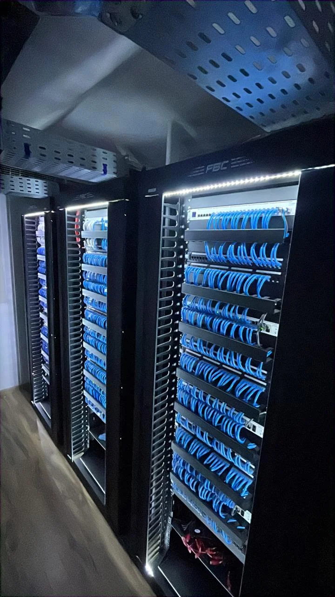
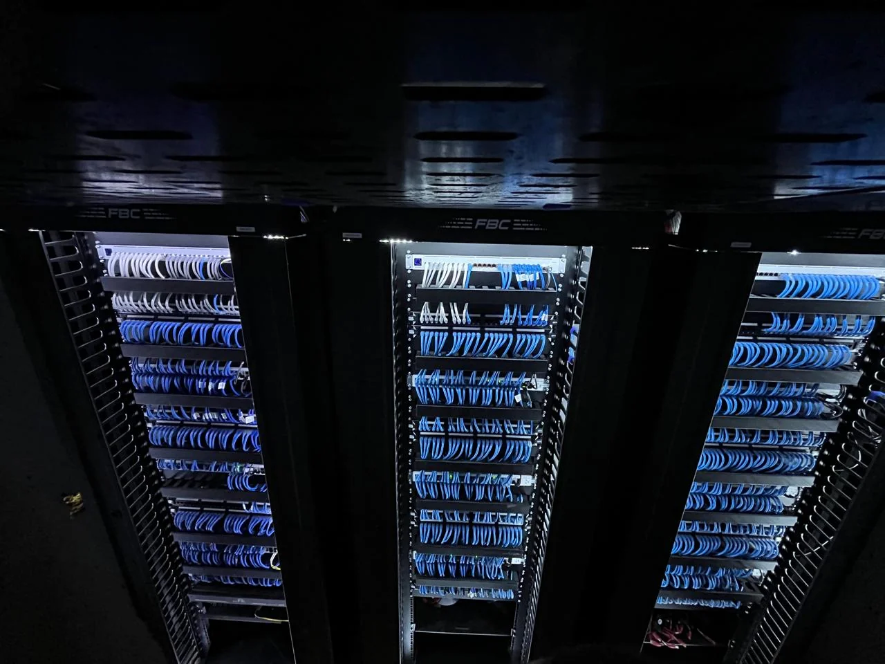
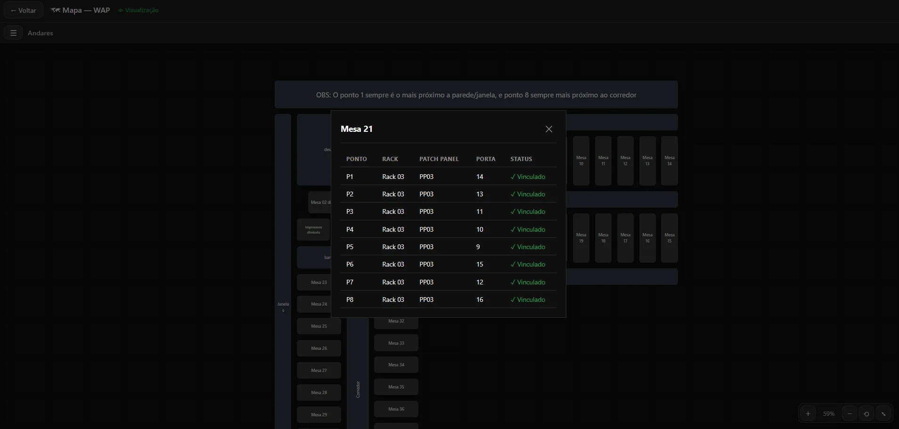

Portfólio
Projetos que conectam pessoas e tecnologia.
Conheça o trabalho da Microgate na reestruturação do datacenter da WAP.

Projeto WAP
Reestruturação do datacenter.
Organização de infraestrutura e mapeamento dos pontos de rede.
- ↗Reestruturação e organização completa dos racks do datacenter
- ↗Remontagem completa dos patch panels
- ↗Organização do cabeamento estruturado nos racks
- ↗Mapeamento de todos os pontos de rede nas mesas de trabalho
- ↗Certificação funcional de todos os pontos de rede

Projeto WAP
Sistema Topologia.
Sistema para visualização completa do mapeamento dos pontos de rede da empresa.
- Frontend: React + Vite
- Backend: Node.js + Express
- Banco de dados: MariaDB remoto
- Autenticação: JWT + bcrypt

Conte com a Microgate
Vamos conversar sobre seu projeto?
Fale com a Microgate sobre as necessidades da sua empresa.